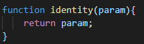
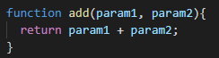
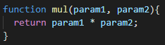
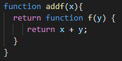
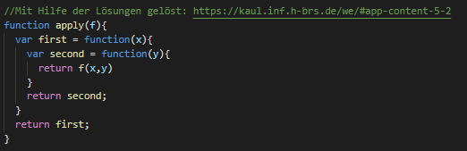

Schreiben Sie eine Funktion identity(), die ein Argument als Parameter entgegen nimmt und dieses als Ergebnis zurück gibt:
Schreiben Sie eine Funktion identity_function(), die ein Argument als Parameter entgegen nimmt und eine Funktion zurück gibt, die dieses Argument zurück gibt:

Schreiben Sie zwei binäre Funktionen add und mul, die Summe und Produkt berechnen:
 Schreiben Sie eine Addier-Funktion addf(), so dass addf(x)(y) genau x + y zurück gibt. (Es haben also zwei Funktionsaufrufe zu erfolgen. addf(x) liefert eine Funktion, die auf y angewandt wird.):
Schreiben Sie eine Funktion applyf(), die aus einer binären Funktion wie add(x,y) eine Funktion addfberechnet, die mit zwei Aufrufen das gleiche Ergebnis liefert, z.B. addf = applyf(add); addf(x)(y) soll add(x,y) liefern. Entsprechend applyf(mul)(5)(6) soll 30 liefern, wenn mul die binäre Multiplikation ist.
